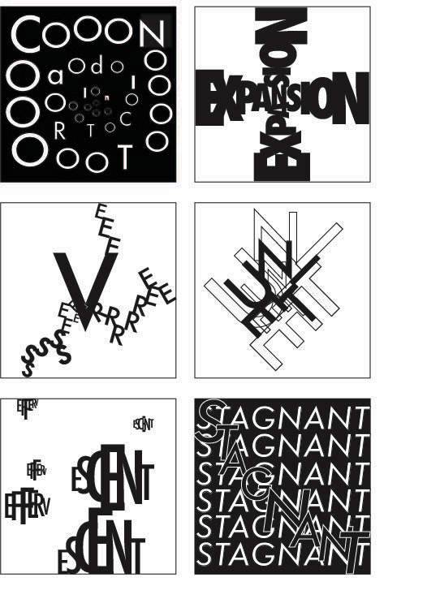

February 13, 2023
These six squares show my exploration of how to relay contraction, expansion, severe, unite, effervescent, and stagnant, based on the words. Contraction follows a line that slowly gets smaller in the center. Among the circular line, there are letters of the word contraction. In expansion, I intended to use the shape of a plus sign to relay the meaning of adding. Severe was inspired by breaking glass to show fractures. Unite was made by putting the words right next to each other in order to show the literal meaning of a combination. Bubbles inspired Effervescent. Stagnant follows the shape of a line which represents not having a flow.
 Return to Classes →